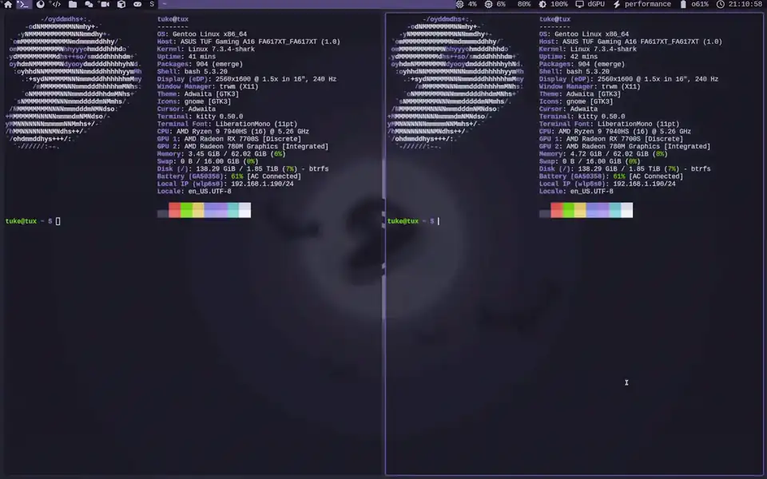

trwm
tuke's rust window manager
A dynamic tiling window manager for X11, inspired by dwm and written from scratch in Rust. It ships its own status bar and screen locker, and is configured in Lua with hot reload.
- Hyprland-style spiral and dwindle split layouts: new windows split the one under the cursor
- dwm-style tags, master/stack, monocle, bstack, grid and deck layouts
- Built-in status bar reading straight from
/procand/sys - PAM screen locker with idle auto-lock and DPMS
- Lua config that applies on save; bad configs are rejected, not fatal
- Multi-monitor, EWMH fullscreen, gaps, in-place restart
cargo install --git https://github.com/TukeCS/trwm